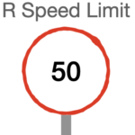

Intro
So I’m currently taking this course about “High Performance Computing”. This entry is not about that exactly: let’s face it, R is not the best option there 😀
But some concepts I touched in the past I thought I could summarise today (for example of past entries: here or here, and more links in the post), with some context of efficiency theory. Note: I’m not inventing the wheel here, just summarising a bit my personal approach to this topic with R.

Amdahl’s Law
I don’t pretend to replicate the Wikipedia entry here.
Let’s just say this: Parallelising is one option to reduce execution times of your program, but it’s not perfect. And as such, one also would have to consider optimising the code “as is” BEFORE parallelizing tasks.
From Amdahl’s Law, I would then personally take out: Try and first reduce the “Sequential” execution times of your code.
The few tricks I normally would use in R to speed things up (before parallelizing stuff) are, more or less in order:
Move away from “for-loops”, and use a vectorized approach where possible (e.g. lapply() and the likes)
If you want to go faster with the same data, maybe consider moving from data FRAMES and instead use DATA TABLES (but the code looks quite different)
As much as I like how dplyr code looks (and reads), if speed is a concern, I would definitely look into base-R alternatives (I have tested in more than one occasion the effects of this change of approach, and results always surprise me…)
Worst case scenario, if you REALLY need it, use RCPP. But warning, here the trick kicks in: In normal script (I’m told not so much for packages developers, but I’m not doing that just yet), using RCPP means you will compile your code as C++, which adds a step that might be slow, and depending on the amount of time spent in the function/piece of code you’re trying to optimize, you might very well end up slowing your script or program overall… So this option is for things that are REALLY long to run.
Gustafson’s Law
So once again, here is the Wikipedia entry for that.
How does that translate for me?
Well, consider parallelising in large and/or slow enough programs/scripts. Otherwise, it might not make sense.
To do so in R, I usually use these two approaches, in this particular order:
Personal notes
I don’t write programs THAT complex too often, meaning that most of the time, I only focus on small optimisations where applicable, but rarely will I actually use plumbeR and create a full-fledged distributed piece of Software. I simply don’t have the need MOST of the time (sometimes though, it’s a cool thing to have in your toolbox).
Now think about the value of the speed up, and the **tradeoffs**:
Refactoring code to make it faster, but maybe somewhat less readable (e.g. moving away from dplyr) is not always the best idea.
Moving away from what you’re comfortable with for minimal gains (data tables take some getting used to) will depend on, well, the gain and the value of the gain (for bigger datasets, it might be better…)
Then again, overall, does your code even really need to be faster? This is probably going to be controversial, I know… Here more often than not, I personally end up saying yes, mind you: I don’t like to wait for my Laptop… And I never know when I am going to re-use some of my own old code, so the better it is upfront, the less work I am giving myself in the future… But I’ll admit in some case I have made the following choice: if the thing is going to run for a long time, maybe it’s fine to have the PC do its thing overnight, and making it faster (but still multiple hours) adds no real value for me as I wouldn’t take it back until the next morning anyway… (It’s a weird thing to say, even in terms of having my laptop spending energy during the night…). I guess all I’m saying is, optimising MY spare time is more important (somewhat anyway) than optimising my MACHINE’s spare time, and in some cases, these are not the same thing.
Then the equation from Amdahl’s law I personally found to be simplistic (from what I understand, and although I get that it pretends to generalise the concept), as one often shouldn’t forget about the “added cost of the parallelising” itself. This is well known, but let me explain nevertheless with R futures: If I decide to use futures to make things parallel, new R processes/sessions will need to be created in the background. That might be minimal, but there is some kind of overhead, in creating the processes, maybe almost constant (maybe not so much), to throw into the equation there. If the constant (let’s call it c) is large enough IN COMPARISON to the overall time T of the SEQUENTIAL version of the code, then the gain from parallelising might not be worth the effort to begin with, regardless of (or maybe depending on) the number of threads the code using the future package is capable of using. But I am being picky, and for long running programs that detail should indeed be negligible…
Conclusions
I like these equations and “laws”, and how to bring those into consideration when coding (in my case, in R, of course :)).
They help put in perspective in which order to try and speed up some code, if the need arises.
I’ll admit it: I normally do at least some effort to speed things up after the initial version of my code, but usually not “seriously” enough, meaning I rarely end up using RStudio’s profvis package (an important step mind you, if you seriously need speed gains on large programs…).
I hope some tricks and the context in the above will be somewhat helpful to you.
References
Although I pointed to other pages here, it wouldn’t be right for me to write about this topic without citing the resource that most useful was to me to improve my code speeds in the past, namely: